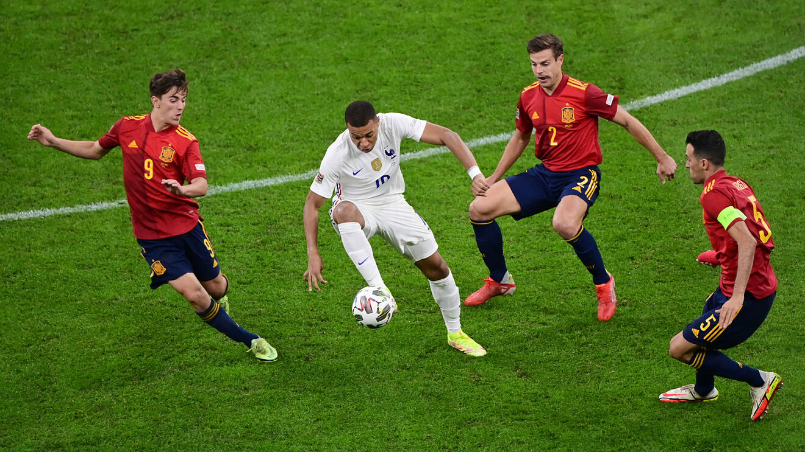
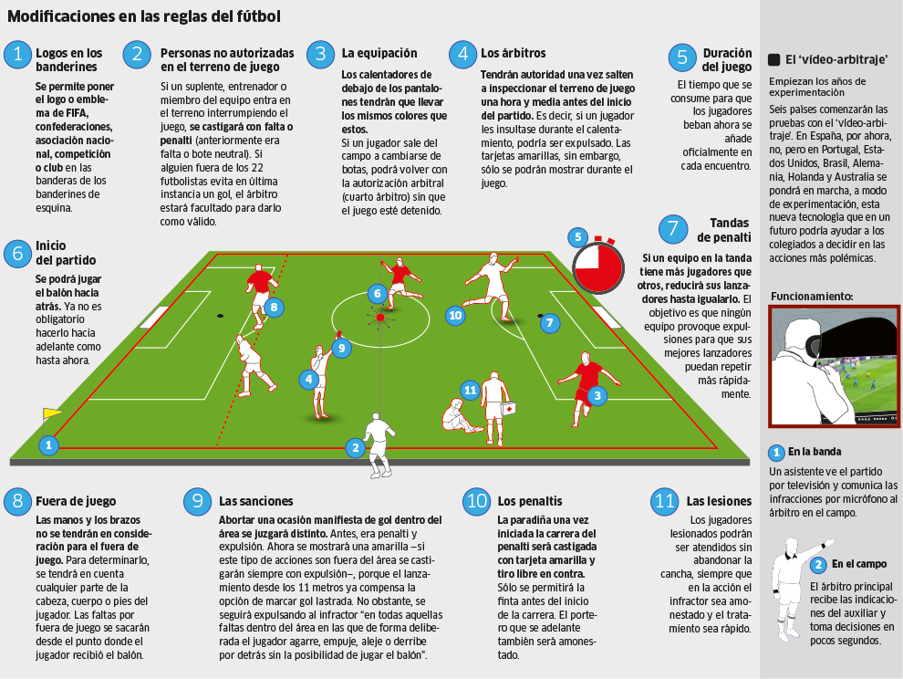
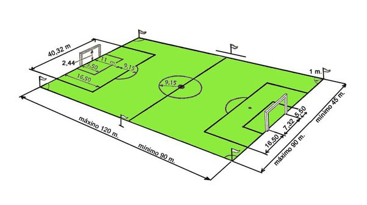

Informacion
¿Qué es Fútbol?
El fútbol, también conocido como balompié o soccer (en Estados Unidos), es un deporte que consta de 22 jugadores en el campo, agrupados en dos equipos de 11 integrantes, que se enfrentan con el objetivo de meter un balón en la portería del equipo contrario y anotar un gol.
Para anotar un gol el futbolista debe hacer uso de sus pies, cabeza o cualquier parte del cuerpo exceptuando las manos o los brazos, ya que esto conlleva a una penalización.
El fútbol es desarrollado en una cancha con césped artificial o natural, cada equipo cuenta con 11 jugadores: defensores, medios, delanteros, y un arquero que es el único responsable de tocar el balón con las manos para impedir que atraviese su propio arco.
Como tal, el fútbol consiste en rodar un balón con el fin de llegar a la cancha o arco contrario para anotar gol, mientras que el otro equipo debe de atacar por medio de tácticas y estrategias.
Los puntos se logran por la cantidad de goles anotados en un tiempo aproximado de 90 minutos, dividido en dos tiempos de 45 minutos cada uno.
Cada juego es guiado y supervisado por un grupo de árbitros (principal y los de línea) que tiene como función la de hacer cumplir el reglamento, y penalizar las violaciones a través de tiros libres, penaltis, tarjetas amarillas y rojas, logrando con esta última la expulsión del jugador.
El fútbol es reconocido como uno de los deportes más populares y practicados en el mundo. Incluso, en la actualidad se realizan diversas competiciones de fútbol que pueden disputarse entre equipos de un mismo país, o entre equipos de distintos países.
Por ejemplo, entre los eventos más importantes del fútbol destaca la Liga de Campeones, que consiste en una competición de nivel internacional, organizado por la UEFA, en la que participan diversos clubes europeos.

Reglas
¿Cuántas reglas tiene el fútbol?
Podría decirse que tiene una gran variedad de pautas, pero aqui te mostramos el resumen de las 10 principales reglas del fútbol:
1. Los partidos de fútbol se dividen en dos tiempos, cada uno de 45 minutos, con un descanso de 15.
2. El árbitro lanza una moneda para decidir el lado de la cancha jugarán.
3. El balón está dentro del juego mientras no haya falta. La pelota está fuera de cancha si cruza la meta o la línea de banda.
4. Se marcará gol cuando el balón pasa la línea de meta y entra al arco, siempre y cuando no haya falta.
5. Se considera fuera de juego (offside) si un jugador le da pase a su compañero y éste está más cerca a la línea de meta opuesta en comparación al balón y al último adversario. En este caso, el árbitro otorgará al rival un tiro libre indirecto (pase a otro jugador).
6. Tocar el balón; saltar sobre el adversario, empujarlo, golpearlo, sujetarlo, patearlo o escupirlo; son consideradas faltas y son cobradas con tiro libre a favor del equipo afectado.
7. El árbitro muestra tarjeta amarilla para amonestar a un jugador (por infringir el reglamento) y una tarjeta roja para expulsarlo (por conducta violenta contra el adversario o impedir un gol con la mano).
8. El tiro libre reanuda el juego después de una falta. Existen dos tipos:
Tiro libre directo: lanzamiento directo a la portería del equipo contrario.
Tiro libre indirecto: un pase a otro jugador.
9. Los penales se marcan cuando un jugador comete una infracción dentro del área que defiende y se cobra en favor del equipo contrario.
10. Los saques reanudan el juego desde distintas partes de la cancha, por ello existen tres, con los nombres de donde se realiza:
saque de banda
saque de meta
saque de esquina

Dimensiones
¿Cuánto mide una cancha de fútbol?
Medidas reglamentarias mínimas y máximas
SUPERFICIE DE JUEGO
Los encuentros pueden jugarse en superficies naturales o artificiales (de color verde), de acuerdo con el reglamento de la competición. El reglamento indica que cuando se utilicen terrenos artificiales en partidos de competición entre equipos de asociaciones miembro afiliadas a la FIFA o en partidos internacionales de competición de clubes, la superficie deberá cumplir los requisitos del concepto de calidad de la FIFA para césped de fútbol o del International Artificial Turf Standard, salvo si la FIFA otorga una dispensación especial.
MARCACIÓN DEL TERRENO
La cancha siempre debe ser rectangular y estar marcada con líneas, las cuales pertenecen a las zonas que demarcan. Las dos líneas de marcación más largas se denominan líneas de banda. Las dos más cortas se llaman líneas de meta. El campo de juego está dividido en dos mitades por una línea media que une los puntos medios de las dos líneas de banda. El centro del campo está marcado con un punto en la mitad de la línea media, alrededor del cual se traza un círculo con un radio de 9.15 m.
DIMENSIONES
Según la FIFA, la medida mínima que puede tener un campo de juego es 45m x 90m, mientras que la máxima es 90m x 120m. Por su parte, para partidos oficiales o internacionales de competencias FIFA, se establece un minimo de 64m x 100m y un maximo de 75m x 110m.
TAMAÑO DEL ÁREA Y DE LOS ARCOS
El área está delimitada por dos líneas perpendiculares a la línea de meta, a 5.5 m de la parte interior de cada poste. Dichas líneas se adentran 5.5 m en el terreno de juego y se unen con una línea paralela a la línea de meta. Por su parte, los arcos se colocan en el centro de cada línea de meta: los postes y el travesaño deben ser de madera, metal u otro material aprobado, deben tener forma cuadrada, rectangular, redonda o elíptica y no deberán constituir ningún peligro para los jugadores. La distancia entre los postes será de 7.32 m y la distancia del borde inferior del travesaño al suelo será de 2.44 m.

ㅤㅤㅤㅤ
ㅤㅤㅤㅤ
Top 10 de las mejores ligas de futbol del mundo
NUMERO 1: "La Liga – España"---
También conocida como Primera División de España, La Liga Santander o Campeonato Nacional de Liga de Primera División, es considerada sin dudas, la mejor de todas las ligas.
Fue fundada el 10 de febrero de 1929 y es organizada por la Liga Nacional de Fútbol Profesional, cuenta con la participación de 20 clubes. Se disputa en un total de 380 partidos (10 por 38 jornadas). Esta información sobre la liga de fútbol española puede ser útil si quieres apostar, utiliza el codigo promocional codere para disfrutar de beneficios.
NUMERO 2: "Serie A – Italia"---La máxima categoría dentro del sistema de ligas en Italia, es conocida por motivos de patrocinio como Serie A TIM y es organizada por la Lega Nazionale Professionisti Serie A (LNPA). Fue fundada el 6 de octubre de 1929. En ella participan 20 equipos en un total de 342 partidos.
NUMERO 3: "Premier League – Inglaterra"---La mayor categoría en sistemas de ligas futbolísticas de Inglaterra, es también conocida con el The Premiership; fue inaugurada el 15 de agosto de 1992. Está compuesta por 20 equipos en un total de 380 partidos (10 por 38 jornadas).
NUMERO 4: "Serie A – Brasil"---El Brasileirão o Campeonato Brasileño de Serie A es la principal competencia entre clubes y la categoría máxima dentro del sistema de ligas de Brasil. Esta liga se organiza ininterrumpidamente desde el 23 de agosto de 1959,
Está compuesta por 20 equipos que se enfrentan en 760 partidos cada temporada y se lleva a cabo entre abril y diciembre de cada año.
Según el ranking oficial anual de la IFFHS, se considera la primera liga en importancia dentro del continente americano y figura entre las 10 ligas más sólidas de mundo.
NUMERO 5: "Bundesliga – Alemania"---La Bundesliga o Liga Federal de Fútbol alemana, es la competencia más importante entre equipos de futbol de primera categoría en ese país. Fue inaugurada el 24 de agosto de 1963, es organizada por Deutsche Fußball Liga (DFL) y en la actualidad se compone de 18 equipos.
Las temporadas de juego se inician en agosto, hasta mayo del siguiente año. Todos los equipos que integran la liga clasifican a la DFB Pokal y el ganador clasifica automáticamente para la DFL Supercup con el campeón de la liga.
NUMERO 6: "Ligue 1 – Francia"---El Championnat de France de football o Campeonato de fútbol francés, es el sistema de ligas francés para la primera división y es organizado la Ligue de Football Professionnel.
Fue inaugurada en 1932 y está conformada por un total de 20 clubes, que juegan 380 partidos por temporada (10 por 38 partidos), desde agosto hasta mayo del siguiente año.
NUMERO 7: "Primera División – Argentina"---Fundada el 12 de abril de 1891 por la Asociación de Futbol Argentino, representa la máxima competición en el sistema de liga del futbol masculino en el país sudamericano.
En el 2021, la AFA comisiono a la Liga Profesional para organizar el torneo. Esta vez estuvo compuesto por 26 equipos que se enfrentan en una rueda de 25 jornadas en un “todos contra todos”.
NUMERO 8: "Eredivisie – Países Bajos"---La División de Honor como también se le conoce, es la categoría máxima dentro del sistema de ligas futbolísticas de los Países Bajos. Fue creada en 1956 y ha sido organizada por la Real Asociación de Futbol (KNVB).
En ella participan 18 clubes y se desarrolla en 306 partidos en 34 jornadas, que se realizan desde agosto hasta mayo del año siguiente. El equipo con más puntos luego de las 34 jornadas, será el campeón Nacional Neerlandés y automáticamente clasifica en la Liga de Campeones de la UEFA.
NUMERO 9: "Primeira Liga – Portugal"---La Primera División de Portugal o La Liga Portugal, es la categoría máxima dentro del sistema de ligas en el futbol portugués. Fue fundada el 20 de enero de 1935 y desde ese momento se ha venido celebrando sin interrupciones.
En la actualidad está conformada por 18 equipos, que se enfrentan en 306 jornadas y es organizada por la Liga Portuguesa de Fútbol Profesional (LPFP).
NUMERO 10: "Primera A – Colombia"---En este ranking de ligas de futbol no podía faltar La Categoría Primera A o Liga Betplay Dimayor, que es el campeonato de fútbol profesional en Primera División de Colombia.
El torneo es organizado por la División Mayor del Fútbol Colombiano (Dimayor) y fue inaugurado el 15 de agosto de 1940. El formato de este campeonato se juega por semestre y se conoce con el nombre de Torneo de apertura y finalización.
Está integrado por 20 equipos, que se enfrentan todos contra todos y solo se eligen el campeón y subcampeón por cada semestre.

Autores
Bryan Alexander Choto Jacinto --Estudiante inam 1-10 Bachillerato General
Michael Salomon Quan Castro--Estudiante inam 1-10 Bachillerato General
Rodrigo Josue Martinez Luna--Estudiante inam 1-10 Bachillerato General